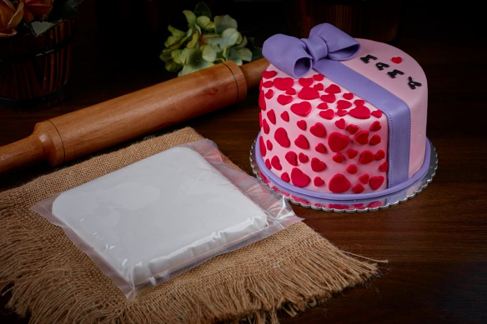
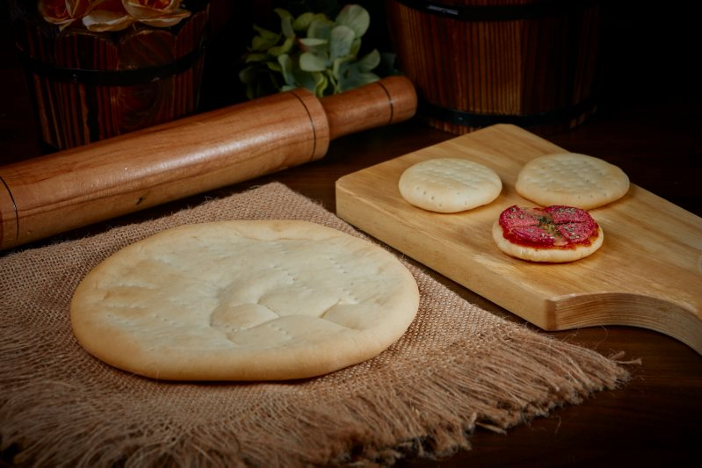
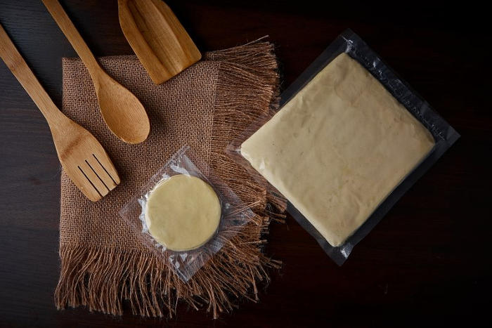
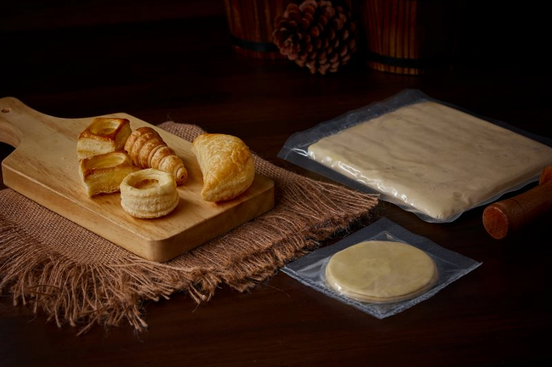
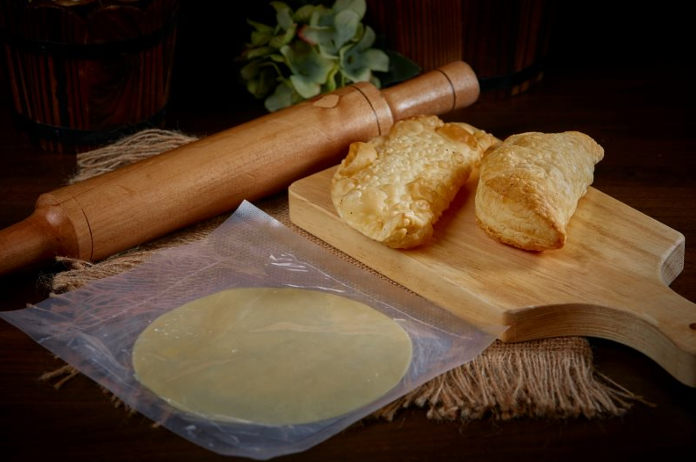

Inicio
Bienvenidos a la mejor tienda de masas. Aquí encontrarás una gran variedad de productos para satisfacer tu gusto por lo dulce y salado.
Productos

Masa de hojaldre para tortas.
Deliciosa masa de hojaldre perfecta parta tortas.

Masa para Pizza.
Masa ligera perfecta para pizzas.

Masa de hojaldre.
Masa crujiente y deliciosa para elaborar postres y otras preparaciones culinarias.

Masa de hojaldre con productos horneados.
Masa perfecta para dar vida a esos productos horneados.

Masa para empanadas.
Masa perfecta para la elaboracion de empanadas al estilo casero.
Descripcion
Somos apasionados por la creación de masas de alta calidad utilizando ingredientes frescos y naturales. Nuestro objetivo es deleitar a nuestros clientes con sabores únicos y una experiencia gastronómica excepcional.